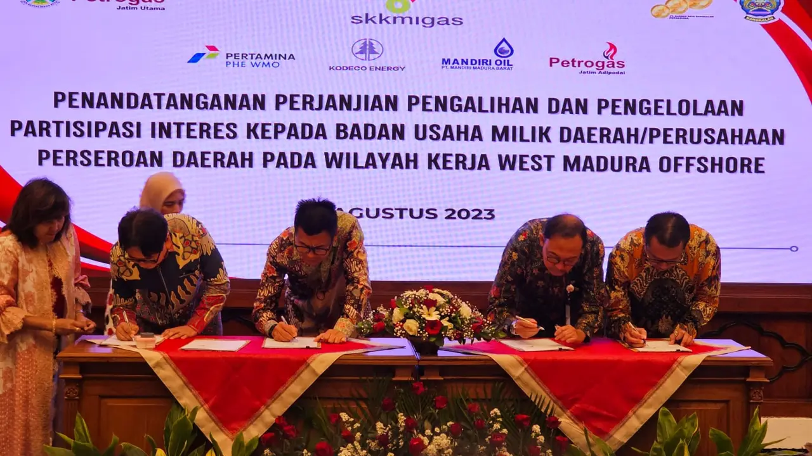

Kementerian ESDM mengumumkan penempatan Pertamina sebagai operator Wilayah Kerja West Madura Offshore dalam rangka perpanjangan kontrak kerja sama.

Beranda / Kontrak Kerja Sama
Kontrak Kerja Sama West Madura Offshore
Informasi mengenai periode kontrak, pengelolaan wilayah kerja, dan peran PHE WMO dalam menjaga keberlanjutan operasi hulu minyak dan gas bumi.
Periode kontrak
Komitmen pengelolaan hingga 6 Mei 2031
Wilayah Kerja West Madura Offshore (WMO) merupakan wilayah kerja minyak dan gas bumi lepas pantai di sekitar Pulau Madura, Jawa Timur. Berdasarkan data masa berlaku kontrak yang dipublikasikan pada Portal Data Ekstraktif Kementerian Energi dan Sumber Daya Mineral (ESDM), kontrak Wilayah Kerja West Madura Offshore tercatat berlaku sejak 7 Mei 2021 sampai dengan 6 Mei 2031.
Periode tersebut menjadi dasar informasi masa berlaku kontrak yang ditampilkan pada halaman profil PHE WMO ini. Tanggal akhir kontrak tidak dengan sendirinya menyatakan bahwa kontrak telah diperpanjang; setiap keputusan mengenai kelanjutan pengelolaan wilayah kerja mengikuti ketentuan dan keputusan Pemerintah Republik Indonesia.
Tanggal efektif kontrak7 Mei 2021
Masa berlaku tercatat hingga6 Mei 2031
Wilayah kerjaWest Madura Offshore
Peran PHE WMO dalam pengelolaan wilayah kerja
PT Pertamina Hulu Energi West Madura Offshore (PHE WMO) menjalankan kegiatan operasi hulu migas sebagai kontraktor kontrak kerja sama di Wilayah Kerja WMO. Peran operator mencakup pengelolaan kegiatan produksi, pemeliharaan fasilitas, keselamatan operasi, serta koordinasi penyaluran hasil produksi sesuai ketentuan yang berlaku.
Kegiatan operasi lepas pantai didukung fasilitas produksi dan infrastruktur penyaluran, termasuk Onshore Receiving Facility (ORF) di Sidorukun, Gresik, Jawa Timur. Pengelolaan fasilitas dan kegiatan operasi diarahkan untuk menjaga keandalan produksi sekaligus menerapkan prinsip keselamatan, perlindungan lingkungan, dan tata kelola yang baik.

Linimasa pengelolaan kontrak
PHE WMO mulai menjalankan peran sebagai operator di Blok West Madura Offshore, sebagaimana dicantumkan dalam profil dan dokumen perusahaan.
Periode kontrak yang tercatat pada Portal Data Ekstraktif ESDM dimulai.
Tanggal akhir masa berlaku kontrak yang tercantum dalam data ESDM.
Kontribusi operasi dan data produksi
Selain masa berlaku kontrak, kinerja produksi menjadi salah satu gambaran aktivitas pengelolaan Wilayah Kerja WMO. Data ringkasan produksi tahun 2025 yang digunakan pada profil website ini mencatat rata-rata produksi minyak dan kondensat sebesar 1.699 barel minyak per hari (BOPD), serta rata-rata produksi gas sebesar 26,3 juta kaki kubik standar per hari (MMSCFD).
1.699BOPD rata-rata minyak dan kondensat (2025)
26,3MMSCFD rata-rata gas (2025)
Angka produksi merupakan data periode 2025 sebagaimana ditampilkan pada ringkasan profil website, bukan jaminan tingkat produksi untuk periode berikutnya. Realisasi produksi dapat berubah mengikuti kondisi reservoir, kegiatan pemeliharaan, ketersediaan fasilitas, dan faktor teknis maupun operasional lainnya.
Informasi dan sumber referensi
Informasi kontrak dan sejarah pengelolaan di halaman ini disusun sebagai materi profil perusahaan. Untuk kepastian hukum, perubahan masa berlaku, maupun keputusan perpanjangan kontrak, pembaca perlu merujuk pada dokumen resmi Pemerintah dan pengumuman perusahaan yang berlaku.
- Portal Data Ekstraktif Kementerian ESDM – Data perusahaan dan masa berlaku kontrak wilayah kerja migas
- Kementerian ESDM – Pertamina Operator(i) West Madura Offshore, 5 Mei 2011
- Laporan keberlanjutan PHE WMO – Profil dan kegiatan operasi West Madura Offshore
Catatan: halaman ini merupakan informasi profil untuk tujuan edukasi dan pengenalan perusahaan, bukan dokumen kontrak atau pernyataan resmi mengenai perpanjangan kontrak.